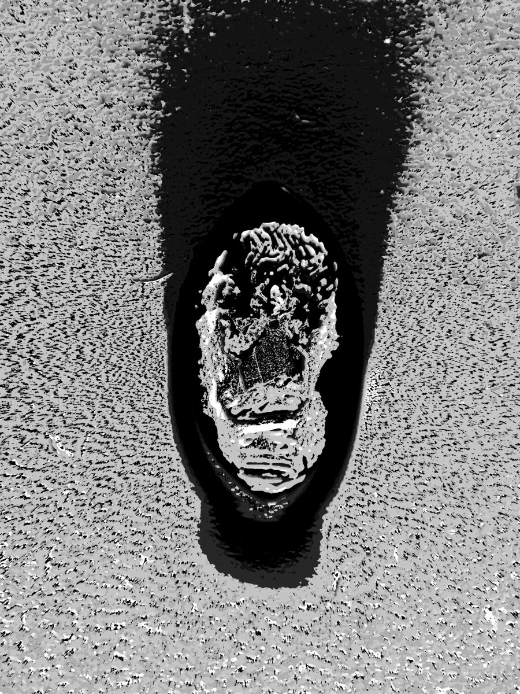
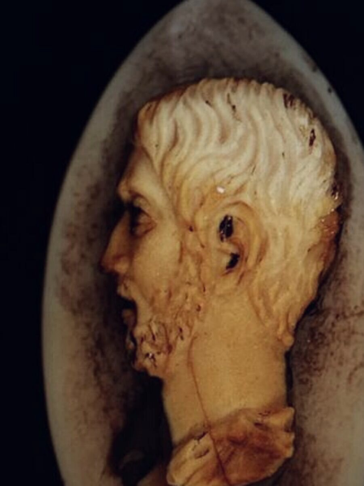
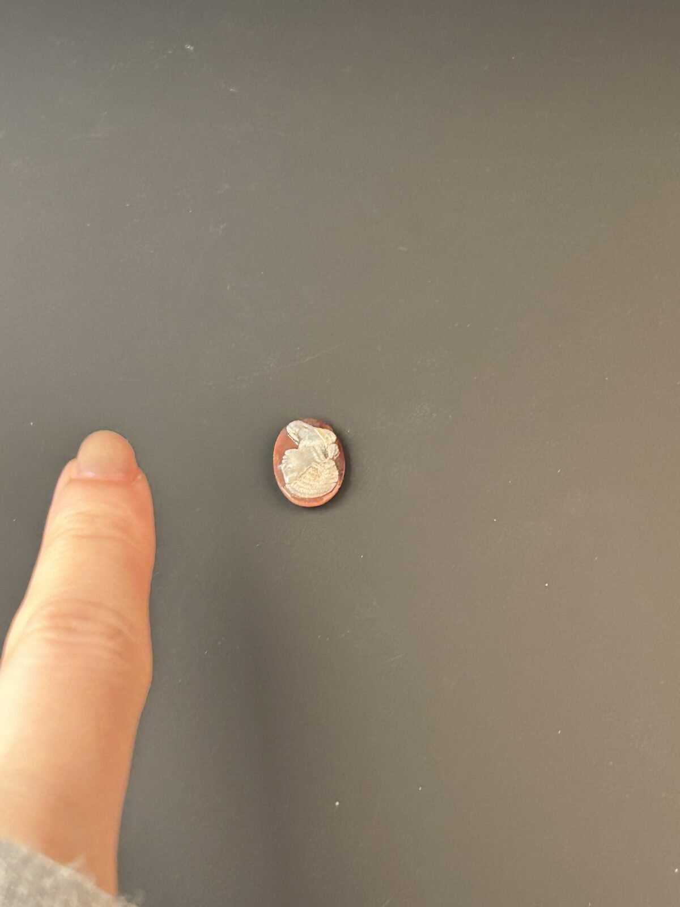
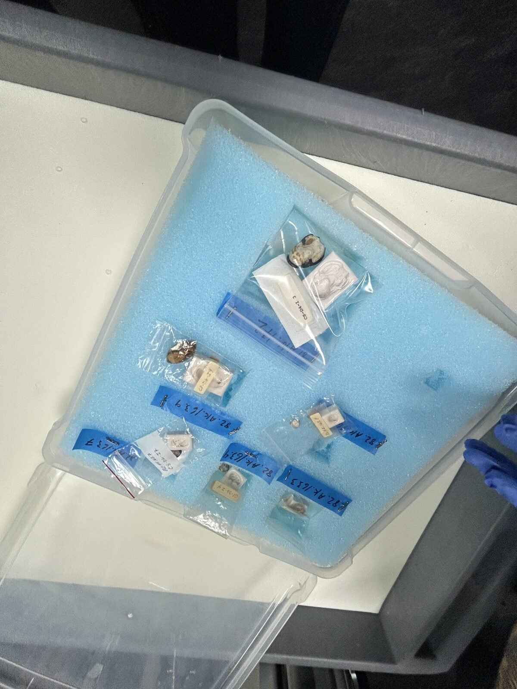
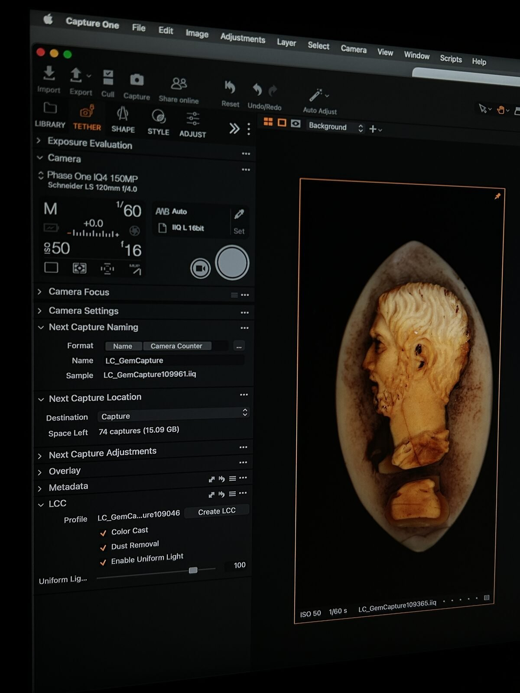
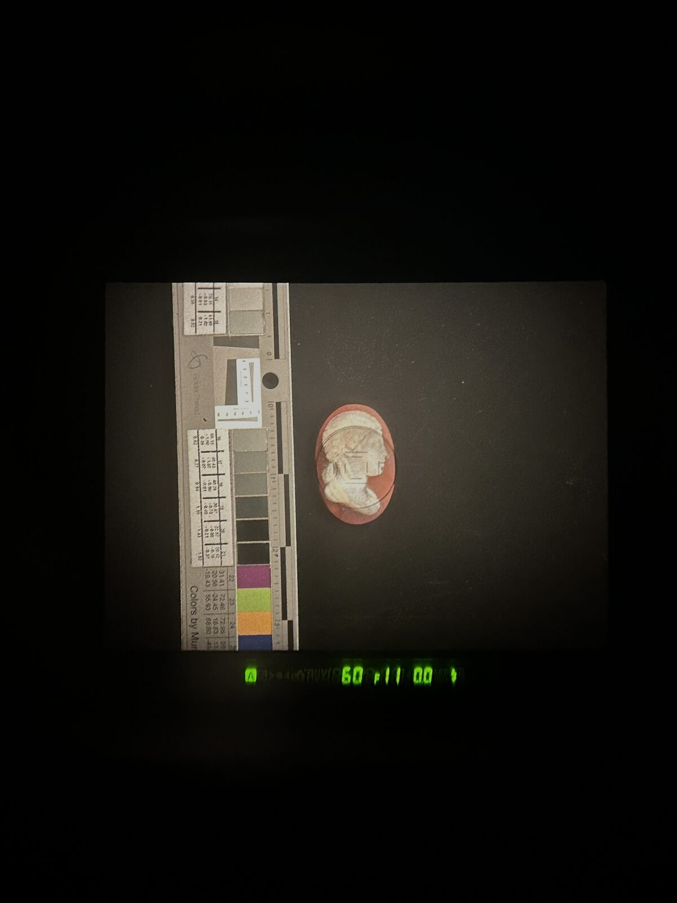
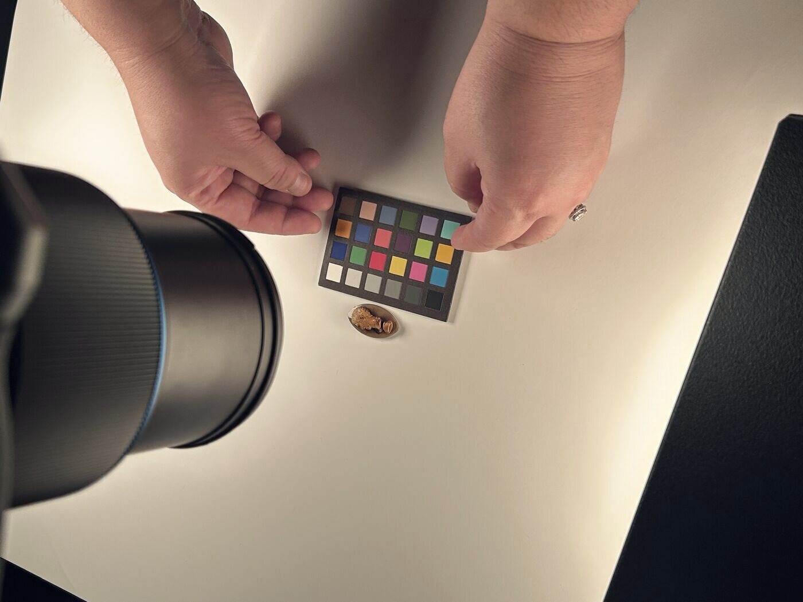

gem stacking
Recovering the depth of cameo glass with a museum’s own camera.


Cameo glass is an ancient technique: layers of colored glass are fused together, then carved back so a pale figure stands in relief against a darker ground. The most famous example is the Roman Portland Vase. The pieces I worked with are much smaller, gems you could cover with a fingertip, held in the Getty’s collection.
They’re made to be looked at closely, turning in the hand under raking light. The things that make them beautiful (carved relief, glossy surfaces, light passing partway into the glass) are the same things that defeat the standard 3D toolkit. Photogrammetry, LiDAR and structured light all fail here: there’s no clean set of views to stitch and no predictable reflectance to exploit.


Working inside the museum’s eye
Museums already photograph their collections beautifully. At the Getty Villa, objects are shot with a Phase One camera, tethered to Capture One, under carefully controlled light, and those photographs are how most people will ever see them. Instead of bringing new hardware into the collection, I asked whether that same setup could also recover shape.


The method is confocal stereo. From a single, fixed viewpoint, you take a stack of photographs across focus and aperture settings. For each pixel, the focus setting where its appearance stops changing with aperture tells you how far away that point is. There’s no matching across views and no guessing about how the surface reflects light: a focus stack, read as depth. Hence the name.
I wrote the reconstruction pipeline myself and tested it on more than ten artifacts. Getty imaging specialists and conservators used the depth maps directly in their close study of the objects.

A method, not a device
Any museum with a standard beauty-photography rig, which is most of them, could recover usable depth with no new equipment. That opens the door to interactive relighting, 3D printing and digital preservation of objects that were never scannable before.
What interests me most is where the depth comes from: not a scanner brought in from outside, but the museum’s own way of looking.
Read the write-up on Substack ↗